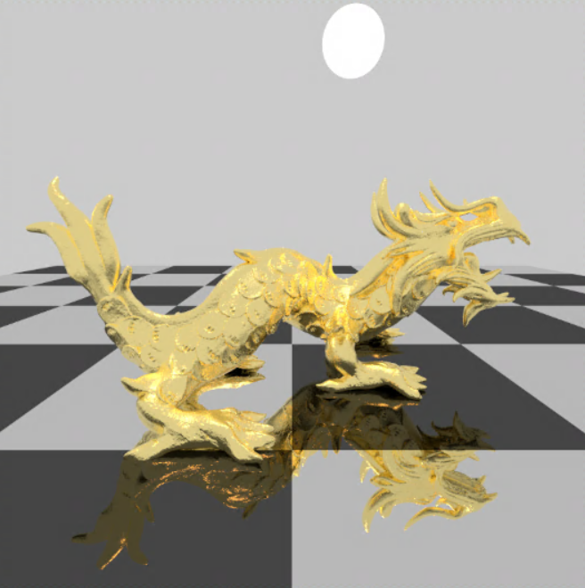

greetings!
I'm Abhinit Sati, a Computer Science PhD student at Boston University. My primary research focus is solving problems in the domain of computational fabrication. Specifically, I work on developing computational methods to improve the efficiency and performance of physical artifacts.
Highlights
Best comp sci content on YouTube
Research
Personal Projects
-

Diffraction
Simulating diffraction effects by extending the PBRT source code
-

Rigid Body simulation
Rigid bodies with arbitrary shapes, collisions also supported
-

Microfacet surface effects
Rough diffuse surfaces, rough shiny surfaces, etc. Extensions to the PBRT library